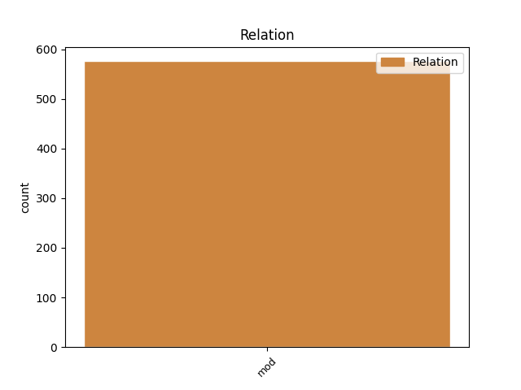
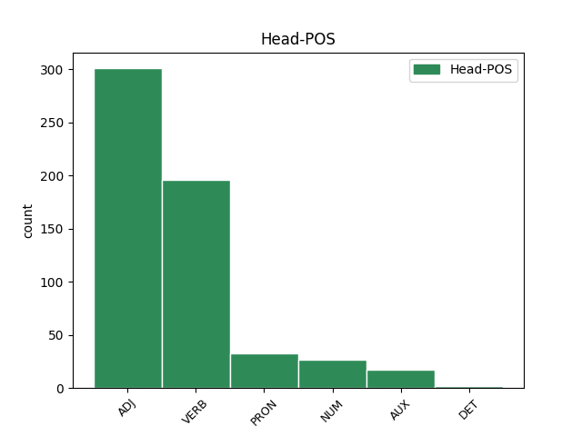
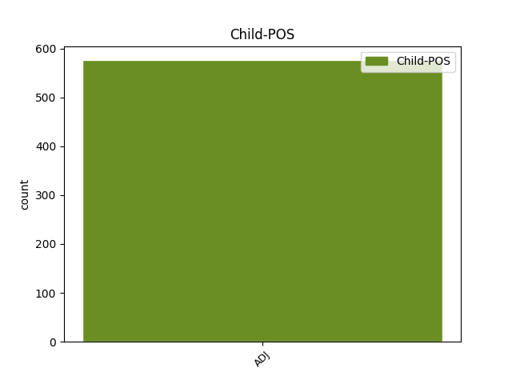

Distribution of features within this leaf



Agreement Rules sorted by frequency.
- When the dependent token is the modifer(mod) of the head token, and the head token is ADJ and the dependent token is ADJ.
1 καὶ _ _ _ _ 0 _ _ _
2 εἶδον _ _ _ _ 0 _ _ _
3 τοὺς _ _ _ _ 0 _ _ _
4 νεκρούς νεκρός ADJ A- Case=Acc|Degree=Pos|Gender=Masc|Number=Plur 0 _ _ _
5 τοὺς _ _ _ _ 0 _ _ _
6 μεγάλους μέγας ADJ A- Case=Acc|Degree=Pos|Gender=Masc|Number=Plur 4 mod _ ref=REV_20.12
7 καὶ _ _ _ _ 0 _ _ _
8 τοὺς _ _ _ _ 0 _ _ _
9 μικρούς _ _ _ _ 0 _ _ _
10 ἑστῶτας _ _ _ _ 0 _ _ _
11 ἐνώπιον _ _ _ _ 0 _ _ _
12 τοῦ _ _ _ _ 0 _ _ _
13 θρόνου _ _ _ _ 0 _ _ _
14 καὶ _ _ _ _ 0 _ _ _
15 βιβλία _ _ _ _ 0 _ _ _
16 ἠνοίχθησαν _ _ _ _ 0 _ _ _
1 εἴ _ _ _ _ 0 _ _ _
2 τις _ _ _ _ 0 _ _ _
3 προσκυνεῖ _ _ _ _ 0 _ _ _
4 τὸ _ _ _ _ 0 _ _ _
5 θηρίον _ _ _ _ 0 _ _ _
6 καὶ _ _ _ _ 0 _ _ _
7 τὴν _ _ _ _ 0 _ _ _
8 εἰκόνα _ _ _ _ 0 _ _ _
9 αὐτοῦ _ _ _ _ 0 _ _ _
10 καὶ _ _ _ _ 0 _ _ _
11 λαμβάνει _ _ _ _ 0 _ _ _
12 χάραγμα _ _ _ _ 0 _ _ _
13 ἐπὶ _ _ _ _ 0 _ _ _
14 τοῦ _ _ _ _ 0 _ _ _
15 μετώπου _ _ _ _ 0 _ _ _
16 αὐτοῦ _ _ _ _ 0 _ _ _
17 ἢ _ _ _ _ 0 _ _ _
18 ἐπὶ _ _ _ _ 0 _ _ _
19 τὴν _ _ _ _ 0 _ _ _
20 χεῖρα _ _ _ _ 0 _ _ _
21 αὐτοῦ _ _ _ _ 0 _ _ _
22 καὶ _ _ _ _ 0 _ _ _
23 αὐτὸς _ _ _ _ 0 _ _ _
24 πίεται _ _ _ _ 0 _ _ _
25 ἐκ _ _ _ _ 0 _ _ _
26 τοῦ _ _ _ _ 0 _ _ _
27 οἴνου _ _ _ _ 0 _ _ _
28 τοῦ _ _ _ _ 0 _ _ _
29 θυμοῦ _ _ _ _ 0 _ _ _
30 τοῦ _ _ _ _ 0 _ _ _
31 θεοῦ _ _ _ _ 0 _ _ _
32 τοῦ _ _ _ _ 0 _ _ _
33 κεκερασμένου κεράννυμι VERB V- Aspect=Perf|Case=Gen|Gender=Masc|Number=Sing|Tense=Past|VerbForm=Part|Voice=Pass 0 _ _ _
34 ἀκράτου ἄκρατος ADJ A- Case=Gen|Degree=Pos|Gender=Masc|Number=Sing 33 mod _ ref=REV_14.10
35 ἐν _ _ _ _ 0 _ _ _
36 τῷ _ _ _ _ 0 _ _ _
37 ποτηρίῳ _ _ _ _ 0 _ _ _
38 τῆς _ _ _ _ 0 _ _ _
39 ὀργῆς _ _ _ _ 0 _ _ _
40 αὐτοῦ _ _ _ _ 0 _ _ _
41 καὶ _ _ _ _ 0 _ _ _
42 βασανισθήσεται _ _ _ _ 0 _ _ _
43 ἐν _ _ _ _ 0 _ _ _
44 πυρὶ _ _ _ _ 0 _ _ _
45 καὶ _ _ _ _ 0 _ _ _
46 θείῳ _ _ _ _ 0 _ _ _
47 ἐνώπιον _ _ _ _ 0 _ _ _
48 ἀγγέλων _ _ _ _ 0 _ _ _
49 ἁγίων _ _ _ _ 0 _ _ _
50 καὶ _ _ _ _ 0 _ _ _
51 ἐνώπιον _ _ _ _ 0 _ _ _
52 τοῦ _ _ _ _ 0 _ _ _
53 ἀρνίου _ _ _ _ 0 _ _ _
1 καὶ _ _ _ _ 0 _ _ _
2 οὗτοι _ _ _ _ 0 _ _ _
3 πάντες _ _ _ _ 0 _ _ _
4 μαρτυρηθέντες _ _ _ _ 0 _ _ _
5 διὰ _ _ _ _ 0 _ _ _
6 τῆς _ _ _ _ 0 _ _ _
7 πίστεως _ _ _ _ 0 _ _ _
8 οὐκ _ _ _ _ 0 _ _ _
9 ἐκομίσαντο _ _ _ _ 0 _ _ _
10 τὴν _ _ _ _ 0 _ _ _
11 ἐπαγγελίαν _ _ _ _ 0 _ _ _
12 τοῦ _ _ _ _ 0 _ _ _
13 θεοῦ _ _ _ _ 0 _ _ _
14 περὶ _ _ _ _ 0 _ _ _
15 ἡμῶν _ _ _ _ 0 _ _ _
16 κρεῖττόν κρείσσων ADJ A- Case=Acc|Degree=Cmp|Gender=Neut|Number=Sing 17 mod _ ref=HEB_11.40
17 τι τίς PRON Pi Case=Acc|Gender=Neut|Number=Sing|PronType=Int 0 _ _ _
18 προβλεψαμένου _ _ _ _ 0 _ _ _
19 ἵνα _ _ _ _ 0 _ _ _
20 μὴ _ _ _ _ 0 _ _ _
21 χωρὶς _ _ _ _ 0 _ _ _
22 ἡμῶν _ _ _ _ 0 _ _ _
23 τελειωθῶσιν _ _ _ _ 0 _ _ _
1 χάριν _ _ _ _ 0 _ _ _
2 ἔχω _ _ _ _ 0 _ _ _
3 τῷ _ _ _ _ 0 _ _ _
4 ἐνδυναμώσαντί _ _ _ _ 0 _ _ _
5 με _ _ _ _ 0 _ _ _
6 Χριστῷ _ _ _ _ 0 _ _ _
7 Ἰησοῦ _ _ _ _ 0 _ _ _
8 τῷ _ _ _ _ 0 _ _ _
9 κυρίῳ _ _ _ _ 0 _ _ _
10 ἡμῶν _ _ _ _ 0 _ _ _
11 ὅτι _ _ _ _ 0 _ _ _
12 πιστόν _ _ _ _ 0 _ _ _
13 με _ _ _ _ 0 _ _ _
14 ἡγήσατο _ _ _ _ 0 _ _ _
15 θέμενος _ _ _ _ 0 _ _ _
16 εἰς _ _ _ _ 0 _ _ _
17 διακονίαν _ _ _ _ 0 _ _ _
18 τὸ _ _ _ _ 0 _ _ _
19 πρότερον πρότερος ADJ A- Case=Acc|Degree=Pos|Gender=Neut|Number=Sing 20 mod _ ref=1TIM_1.13
20 ὄντα εἰμί AUX V- Case=Acc|Gender=Masc|Number=Sing|Tense=Pres|VerbForm=Part|Voice=Act 0 _ _ _
21 βλάσφημον _ _ _ _ 0 _ _ _
22 καὶ _ _ _ _ 0 _ _ _
23 διώκτην _ _ _ _ 0 _ _ _
24 καὶ _ _ _ _ 0 _ _ _
25 ὑβριστήν _ _ _ _ 0 _ _ _
1 εἴτε _ _ _ _ 0 _ _ _
2 γλώσσῃ _ _ _ _ 0 _ _ _
3 τις _ _ _ _ 0 _ _ _
4 λαλεῖ _ _ _ _ 0 _ _ _
5 κατὰ _ _ _ _ 0 _ _ _
6 δύο _ _ _ _ 0 _ _ _
7 ἢ _ _ _ _ 0 _ _ _
8 τὸ _ _ _ _ 0 _ _ _
9 πλεῖστον πολύς ADJ A- Case=Acc|Degree=Sup|Gender=Neut|Number=Sing 10 mod _ ref=1COR_14.27
10 τρεῖς τρεῖς NUM Ma Case=Acc|Gender=Masc|Number=Plur 0 _ _ _
11 καὶ _ _ _ _ 0 _ _ _
12 ἀνὰ _ _ _ _ 0 _ _ _
13 μέρος _ _ _ _ 0 _ _ _
14 καὶ _ _ _ _ 0 _ _ _
15 εἷς _ _ _ _ 0 _ _ _
16 διερμηνευέτω _ _ _ _ 0 _ _ _
1 καὶ _ _ _ _ 0 _ _ _
2 ὃ _ _ _ _ 0 _ _ _
3 σπείρεις _ _ _ _ 0 _ _ _
4 οὐ _ _ _ _ 0 _ _ _
5 τὸ _ _ _ _ 0 _ _ _
6 σῶμα _ _ _ _ 0 _ _ _
7 τὸ _ _ _ _ 0 _ _ _
8 γενησόμενον _ _ _ _ 0 _ _ _
9 σπείρεις _ _ _ _ 0 _ _ _
10 ἀλλὰ _ _ _ _ 0 _ _ _
11 γυμνὸν _ _ _ _ 0 _ _ _
12 κόκκον _ _ _ _ 0 _ _ _
13 εἰ _ _ _ _ 0 _ _ _
14 τύχοι _ _ _ _ 0 _ _ _
15 σίτου _ _ _ _ 0 _ _ _
16 ἤ _ _ _ _ 0 _ _ _
17 τινος τὶς DET Px Case=Gen|Gender=Masc|Number=Sing 0 _ _ _
18 τῶν _ _ _ _ 0 _ _ _
19 λοιπῶν λοιπός ADJ A- Case=Gen|Degree=Pos|Gender=Masc|Number=Plur 17 mod _ ref=1COR_15.37
Disagree Examples:
1 οἱ _ _ _ _ 0 _ _ _
2 δὲ _ _ _ _ 0 _ _ _
3 πρότερον πρότερος ADJ A- Case=Acc|Degree=Pos|Gender=Neut|Number=Sing 5 mod _ ref=1.7.3
4 Ἄγρωνος _ _ _ _ 0 _ _ _
5 βασιλεύσαντες βασιλεύω VERB V- Aspect=Perf|Case=Nom|Gender=Masc|Number=Plur|Tense=Past|VerbForm=Part|Voice=Act 0 _ _ _
6 ταύτης _ _ _ _ 0 _ _ _
7 τῆς _ _ _ _ 0 _ _ _
8 χώρης _ _ _ _ 0 _ _ _
9 ἦσαν _ _ _ _ 0 _ _ _
10 ἀπόγονοὶ _ _ _ _ 0 _ _ _
11 Λυδοῦ _ _ _ _ 0 _ _ _
12 τοῦ _ _ _ _ 0 _ _ _
13 Ἄτυος _ _ _ _ 0 _ _ _
14 ἀπ’ _ _ _ _ 0 _ _ _
15 ὅτευ _ _ _ _ 0 _ _ _
16 ὁ _ _ _ _ 0 _ _ _
17 δῆμος _ _ _ _ 0 _ _ _
18 Λύδιος _ _ _ _ 0 _ _ _
19 ἐκλήθη _ _ _ _ 0 _ _ _
20 ὁ _ _ _ _ 0 _ _ _
21 πᾶς _ _ _ _ 0 _ _ _
22 οὗτος _ _ _ _ 0 _ _ _
23 πρότερον _ _ _ _ 0 _ _ _
24 Μηίων _ _ _ _ 0 _ _ _
25 καλεόμενος _ _ _ _ 0 _ _ _
1 οἱ _ _ _ _ 0 _ _ _
2 δὲ _ _ _ _ 0 _ _ _
3 πρότερον _ _ _ _ 0 _ _ _
4 Ἄγρωνος _ _ _ _ 0 _ _ _
5 βασιλεύσαντες _ _ _ _ 0 _ _ _
6 ταύτης _ _ _ _ 0 _ _ _
7 τῆς _ _ _ _ 0 _ _ _
8 χώρης _ _ _ _ 0 _ _ _
9 ἦσαν _ _ _ _ 0 _ _ _
10 ἀπόγονοὶ _ _ _ _ 0 _ _ _
11 Λυδοῦ _ _ _ _ 0 _ _ _
12 τοῦ _ _ _ _ 0 _ _ _
13 Ἄτυος _ _ _ _ 0 _ _ _
14 ἀπ’ _ _ _ _ 0 _ _ _
15 ὅτευ _ _ _ _ 0 _ _ _
16 ὁ _ _ _ _ 0 _ _ _
17 δῆμος _ _ _ _ 0 _ _ _
18 Λύδιος _ _ _ _ 0 _ _ _
19 ἐκλήθη _ _ _ _ 0 _ _ _
20 ὁ _ _ _ _ 0 _ _ _
21 πᾶς _ _ _ _ 0 _ _ _
22 οὗτος _ _ _ _ 0 _ _ _
23 πρότερον πρότερος ADJ A- Case=Acc|Degree=Pos|Gender=Neut|Number=Sing 25 mod _ ref=1.7.3
24 Μηίων _ _ _ _ 0 _ _ _
25 καλεόμενος καλέω VERB V- Case=Nom|Gender=Masc|Number=Sing|Tense=Pres|VerbForm=Part|Voice=Pass 0 _ _ _
1 ἐρασθεὶς _ _ _ _ 0 _ _ _
2 δὲ _ _ _ _ 0 _ _ _
3 ἐνόμιζέ _ _ _ _ 0 _ _ _
4 οἱ _ _ _ _ 0 _ _ _
5 εἶναι _ _ _ _ 0 _ _ _
6 γυναῖκα _ _ _ _ 0 _ _ _
7 πολλὸν _ _ _ _ 0 _ _ _
8 πασέων πᾶς ADJ Px Case=Gen|Gender=Fem|Number=Plur 9 mod _ ref=1.8.1
9 καλλίστην καλός ADJ A- Case=Acc|Degree=Sup|Gender=Fem|Number=Sing 0 _ _ _
1 νῦν _ _ _ _ 0 _ _ _
2 ὦν _ _ _ _ 0 _ _ _
3 ἐπειρέσθαι _ _ _ _ 0 _ _ _
4 με _ _ _ _ 0 _ _ _
5 ἵμερος _ _ _ _ 0 _ _ _
6 ἐπῆλθέ _ _ _ _ 0 _ _ _
7 σε _ _ _ _ 0 _ _ _
8 εἴ _ _ _ _ 0 _ _ _
9 τινα τίς PRON Pi Case=Acc|Gender=Masc|Number=Sing|PronType=Int 0 _ _ _
10 ἤδη _ _ _ _ 0 _ _ _
11 πάντων πᾶς ADJ Px Case=Gen|Gender=Masc|Number=Plur 9 mod _ ref=1.30.2
12 εἶδες _ _ _ _ 0 _ _ _
13 ὀλβιώτατον _ _ _ _ 0 _ _ _
1 οὐ _ _ _ _ 0 _ _ _
2 γάρ _ _ _ _ 0 _ _ _
3 τι _ _ _ _ 0 _ _ _
4 ὁ _ _ _ _ 0 _ _ _
5 μέγα μέγας ADJ A- Case=Acc|Degree=Pos|Gender=Neut|Number=Sing 6 mod _ ref=1.32.5
6 πλούσιος πλούσιος ADJ A- Case=Nom|Degree=Pos|Gender=Masc|Number=Sing 0 _ _ _
7 μᾶλλον _ _ _ _ 0 _ _ _
8 τοῦ _ _ _ _ 0 _ _ _
9 ἐπ’ _ _ _ _ 0 _ _ _
10 ἡμέρην _ _ _ _ 0 _ _ _
11 ἔχοντος _ _ _ _ 0 _ _ _
12 ὀλβιώτερος _ _ _ _ 0 _ _ _
13 ἐστί _ _ _ _ 0 _ _ _
14 εἰ _ _ _ _ 0 _ _ _
15 μή _ _ _ _ 0 _ _ _
16 οἱ _ _ _ _ 0 _ _ _
17 τύχη _ _ _ _ 0 _ _ _
18 ἐπίσποιτο _ _ _ _ 0 _ _ _
19 πάντα _ _ _ _ 0 _ _ _
20 καλὰ _ _ _ _ 0 _ _ _
21 ἔχοντα _ _ _ _ 0 _ _ _
22 εὖ _ _ _ _ 0 _ _ _
23 τελευτῆσαὶ _ _ _ _ 0 _ _ _
24 τὸν _ _ _ _ 0 _ _ _
25 βίον _ _ _ _ 0 _ _ _